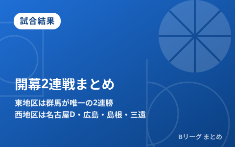

【Bプレミア開幕2連戦まとめ】東地区は群馬が唯一の2連勝、西地区は名古屋D・広島・島根・三遠が白星発進

9月22日に開幕した新リーグ「B.PREMIER（B.LEAGUE 2026-27）」は、27日までに全クラブが開幕2連戦を消化しました。東地区では群馬クレインサンダーズが唯一の開幕2連勝を飾る一方、大型補強で注目された茨城ロボッツやアルティーリ千葉、川崎ブレイブサンダースは連敗スタート。西地区では名古屋ダイヤモンドドルフィンズ、広島ドラゴンフライズ、島根スサノオマジック、三遠ネオフェニックスの4クラブが開幕2連勝を飾るなど、新戦力が白星を手繰り寄せる展開となりました。ここまでの東西地区の結果を振り返ります。
東地区 ― 群馬が唯一の開幕2連勝、大型補強の茨城・A千葉は苦しい滑り出し
オープンハウスアリーナ太田で行われた群馬クレインサンダーズ対アルティーリ千葉の開幕戦（9月24日）は、終了間際まで一進一退の接戦となりました。第4クォーター終了間際、新加入のスタンリー・ジョンソンが起死回生の3ポイントブザービーターを沈め、76-74の劇的勝利。ジョンソンはこの試合16得点（3ポイント4本）3リバウンド1スティールと大きな仕事をやってのけました。中2日で迎えた26日の第2戦も91-59と圧倒し、群馬は東地区で唯一となる開幕2連勝でホームからのスタートを切りました。
| 試合 | スコア |
|---|---|
| 群馬クレインサンダーズ vs アルティーリ千葉（9/24） | 76-74（群馬勝利／ジョンソンのブザービーター） |
| 群馬クレインサンダーズ vs アルティーリ千葉（9/26） | 91-59（群馬勝利） |
一方、オフシーズンの大型補強で開幕前から話題を集めた茨城ロボッツとアルティーリ千葉は、ともに開幕2連敗というつまずくスタートに。桶谷大新ヘッドコーチが率いる川崎ブレイブサンダースも、名古屋ダイヤモンドドルフィンズに連敗（93-63、90-78）し、連敗発進となりました。
西地区 ― 名古屋D・広島・島根・三遠の4クラブが開幕2連勝
西地区では4クラブが開幕2連勝を飾りました。ロイ・ラナヘッドコーチ率いる名古屋ダイヤモンドドルフィンズは、アウェーで川崎ブレイブサンダースを26日に93-63、27日に90-78で連破。広島ドラゴンフライズはアウェーで佐賀バルーナーズを25日に100-87、27日に89-61で下し、2試合合計189得点と攻撃力の高さを見せつけました。前シーズンチャンピオンの長崎ヴェルカと対戦した島根スサノオマジックは、23日に89-64、25日に85-78で連勝し、新加入のデクスター・デニスとエース岡田侑大の得点力が光りました。三遠ネオフェニックスはアウェーで茨城ロボッツを下して開幕2連勝を果たし、ジェイク・ヴァン・タバーゲンが31得点を挙げるなど外国籍勢が躍動しています。
| クラブ | 開幕2連戦の対戦相手・結果 |
|---|---|
| 名古屋ダイヤモンドドルフィンズ | vs 川崎（93-63 → 90-78）で2連勝 |
| 広島ドラゴンフライズ | vs 佐賀（100-87 → 89-61）で2連勝・2試合計189得点 |
| 島根スサノオマジック | vs 長崎（89-64 → 85-78）で2連勝 |
| 三遠ネオフェニックス | vs 茨城（81-75など）で2連勝・タバーゲンが31得点 |
Q. 東西地区に分かれているのはなぜ？
A. B.PREMIERは全20クラブを東地区・西地区に分けてリーグ戦を行うレギュレーションを採用しています。開幕からの連戦成績は、シーズン序盤の勢力図を占ううえで重要な指標になります。
今後の注目ポイント
開幕2連戦を終えた時点では、東地区の群馬、西地区の名古屋D・広島・島根・三遠が好スタートを切った一方、大型補強を敢行したクラブの中には苦しい滑り出しとなったところも見られます。新リーグの開幕日程やレギュレーションの詳細はBプレミア開幕の記事、オフの主な補強状況は8月の移籍まとめで整理しています。当サイトでは今後も各クラブの連戦成績や順位の動きを継続してお届けします。
出典：バスケットボールキング「【Bプレミア東地区結果まとめ】群馬が唯一の開幕2連勝…大型補強の茨城＆A千葉、川崎は連敗スタート」／バスケットボールキング「【Bプレミア西地区結果まとめ】名古屋Dや広島など開幕2連勝…各地で新戦力が白星手繰り寄せる活躍」／上毛新聞電子版／佐賀新聞／東愛知新聞ほか
https://basketballking.jp/news/japan/20260928/634964.html
https://basketballking.jp/news/japan/20260928/634877.html
https://www.jomo-news.co.jp/articles/-/1030691
https://higashiaichi.jp/news/detail.php?id=27970